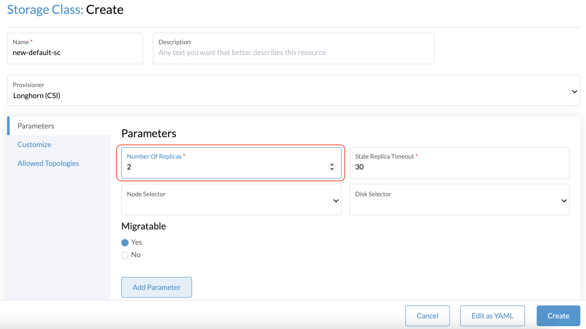
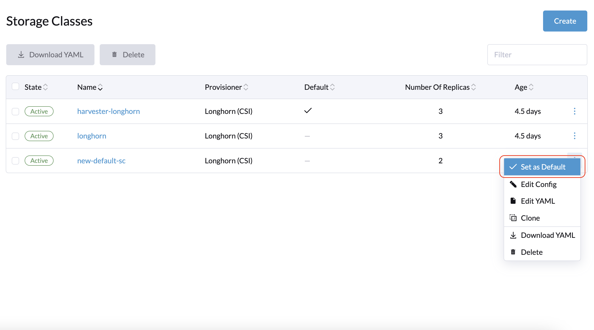
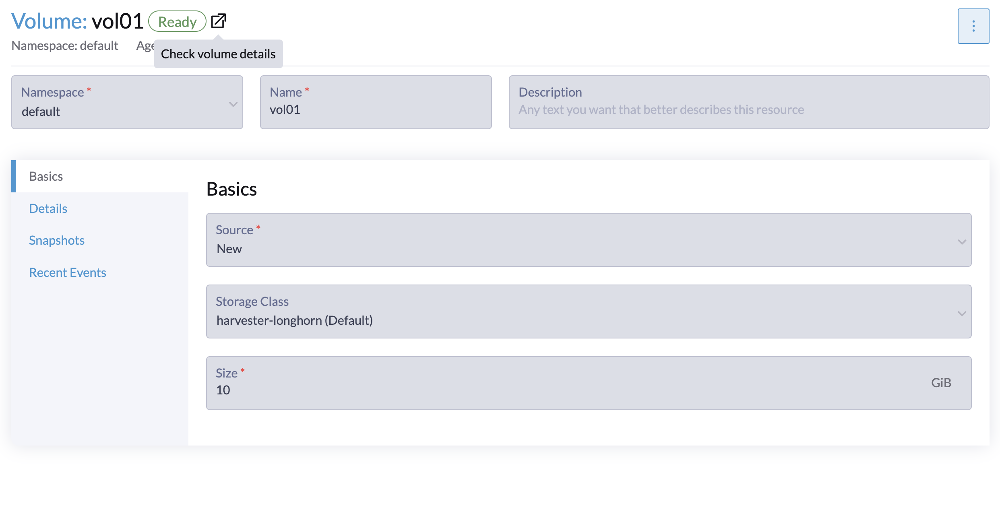
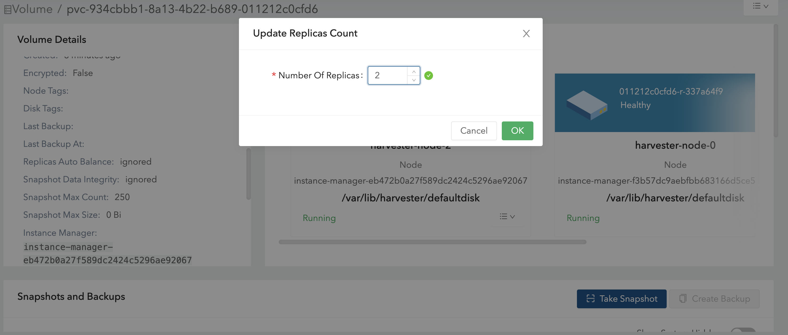
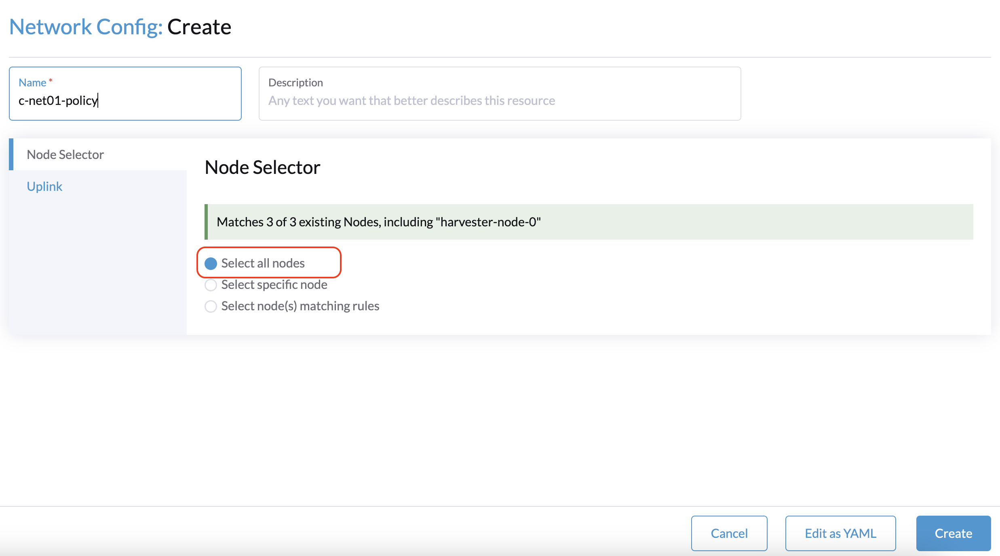
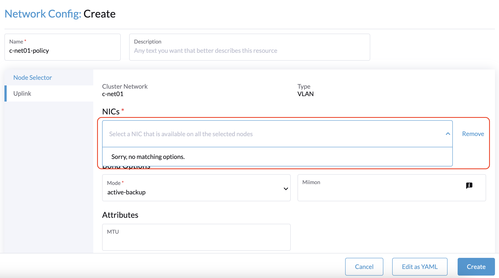
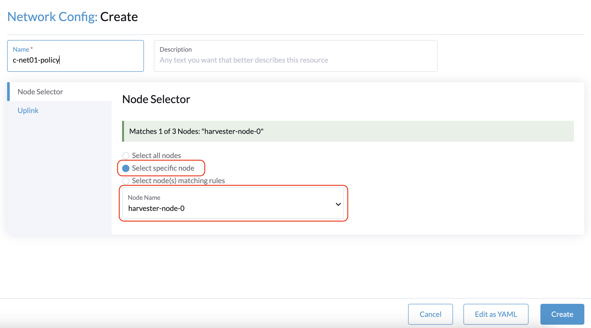
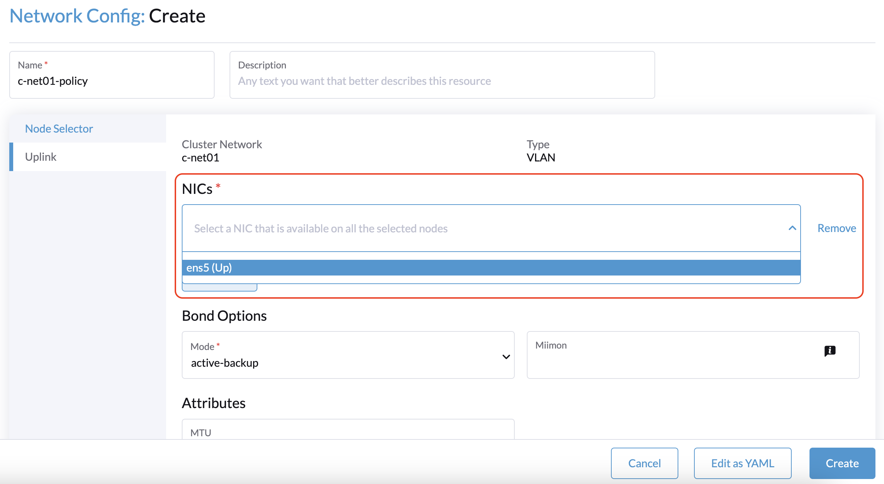
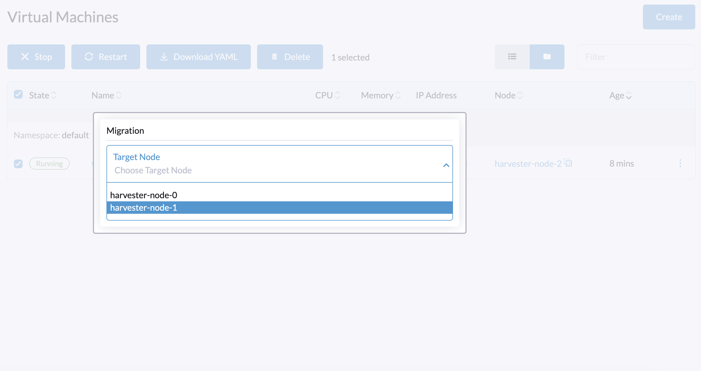

|
Este documento ha sido traducido utilizando tecnología de traducción automática. Si bien nos esforzamos por proporcionar traducciones precisas, no ofrecemos garantías sobre la integridad, precisión o confiabilidad del contenido traducido. En caso de discrepancia, la versión original en inglés prevalecerá y constituirá el texto autorizado. |
Nodo Testigo
SUSE Virtualization los clústeres desplegados en entornos de producción requieren un plano de control para la gestión de nodos y pods. Un clúster típico de tres nodos tiene tres nodos de gestión que contienen cada uno el conjunto completo de componentes del plano de control. Un componente clave es etcd, que Kubernetes utiliza para almacenar sus datos (configuración, estado y metadatos). El número de nodos etcd debe ser siempre un número impar (por ejemplo, 3 es el número predeterminado en SUSE Virtualization) para asegurar que se mantenga un quórum.
Algunas situaciones pueden requerir que evites desplegar cargas de trabajo y datos de usuario en nodos de gestión. En estas situaciones, se puede asignar a un nodo del clúster el rol de testigo, que lo limita a funcionar como un miembro del clúster etcd. El nodo testigo es responsable de establecer un quórum de miembros (una mayoría de nodos), que deben estar de acuerdo en las actualizaciones del estado del clúster.
Los nodos testigos no almacenan ningún dato, pero se deben considerar las recomendaciones de hardware para los nodos etcd. Utilizar hardware con recursos limitados afecta significativamente el rendimiento del clúster, como se describe en el artículo Rendimiento lento de etcd (pruebas de rendimiento y optimización).
SUSE Virtualization admite clústeres con dos nodos de gestión y un nodo testigo (y opcionalmente, uno o más nodos de trabajo). Para más información sobre los roles de los nodos, consulta Gestión de Roles.
|
A un nodo se le puede asignar el rol de testigo solo en el momento en que se une a un clúster. Cada clúster puede tener solo un nodo testigo. |
Creando un SUSE Virtualization Clúster con un Nodo Testigo
Puedes asignar el rol de testigo a un nodo cuando se une a un clúster recién creado.
En el siguiente ejemplo, se creó un clúster con tres nodos y se asignó al nodo harvester-node-1 el rol de testigo. harvester-node-1 consume menos recursos y solo tiene capacidades de etcd.
NAME↑ STATUS ROLE VERSION PODS CPU MEM %CPU %MEM CPU/A MEM/A AGE harvester-node-0 Ready control-plane,etcd,master v1.27.10+rke2r1 70 1095 10143 10 63 10000 15976 4d13h harvester-node-1 Ready etcd v1.27.10+rke2r1 7 258 2258 2 14 10000 15976 4d13h harvester-node-2 Ready control-plane,etcd,master v1.27.10+rke2r1 36 840 6905 8 43 10000 15976 4d13h
Debido a que el clúster debe tener tres nodos, el controlador de promoción promoverá los otros dos nodos. Después de eso, el clúster tendrá dos nodos de plano de control y un nodo testigo.
Cargas de trabajo en el Nodo Testigo
El nodo testigo solo ejecuta las siguientes cargas de trabajo esenciales:
-
harvester-node-manager
-
cloud-controller-manager
-
etcd
-
kube-proxy
-
rke2-canal
-
rke2-multus
Actualizar un Clúster con un Nodo Testigo
Los requisitos y procedimientos generales de actualización se aplican a los clústeres con un nodo testigo. Sin embargo, la existencia de volúmenes degradados en tales clústeres puede causar que las operaciones de actualización fallen.
Réplicas de Longhorn en Clústeres con un Nodo Testigo
SUSE Virtualization utiliza Longhorn, un sistema de almacenamiento en bloques distribuido, para la gestión de volúmenes de dispositivos de bloque. Longhorn se provisiona a nodos de gestión y de trabajo, pero no a nodos testigos, que no almacenan ningún dato.
Longhorn crea réplicas de cada volumen para aumentar la disponibilidad. Las réplicas contienen una cadena de instantáneas del volumen, con cada instantánea almacenando el cambio desde una instantánea anterior. En SUSE Virtualization, la StorageClass por defecto harvester-longhorn tiene un valor de recuento de réplicas de 3.
limitaciones
Los nodos testigos no almacenan ningún dato. Esto significa que en clústeres de tres nodos (sin nodos de trabajo), solo se crean dos réplicas para cada volumen de Longhorn. Sin embargo, la StorageClass por defecto harvester-longhorn tiene un valor de recuento de réplicas de 3 para alta disponibilidad. Si utilizas esta StorageClass para crear volúmenes, Longhorn no puede crear el número configurado de réplicas. Esto resulta en que los volúmenes se marquen como Degradado en la interfaz de usuario de Longhorn.
En resumen, debes utilizar una StorageClass que coincida con la configuración del clúster.
-
2 nodos de gestión + 1 nodo testigo: Crea una nueva StorageClass por defecto con el parámetro número de réplicas establecido en 2. Esto asegura que solo se creen dos réplicas para cada volumen de Longhorn.
-
2 nodos de gestión + 1 nodo testigo + 1 o más nodos de trabajo: Puedes utilizar la StorageClass por defecto existente.


Si ya has creado volúmenes utilizando la StorageClass por defecto original, puedes modificar el número de réplicas en la pantalla de Volume de la interfaz de usuario de Longhorn integrada.


Problemas conocidos
1. Al crear un clúster con un nodo testigo, la *configuración de red: La pantalla de creación * en la interfaz de usuario SUSE Virtualization no puede identificar ninguna NIC que se pueda utilizar con todos los nodos.


La solución alternativa es seleccionar un nodo que no sea testigo y luego seleccionar una NIC que se pueda utilizar con ese nodo específico.


Debes repetir este procedimiento para cada nodo que no sea testigo en el clúster. Los mismos ajustes de uplink se pueden utilizar en todos los nodos.
2. Al seleccionar un nodo objetivo para la migración de VM, la lista de objetivos incluye el nodo testigo.

No selecciones el nodo testigo como el objetivo de migración. Si lo haces, la migración de la máquina virtual fallará.
Problema relacionado: [BUG] No se debe seleccionar el nodo testigo como objetivo de migración